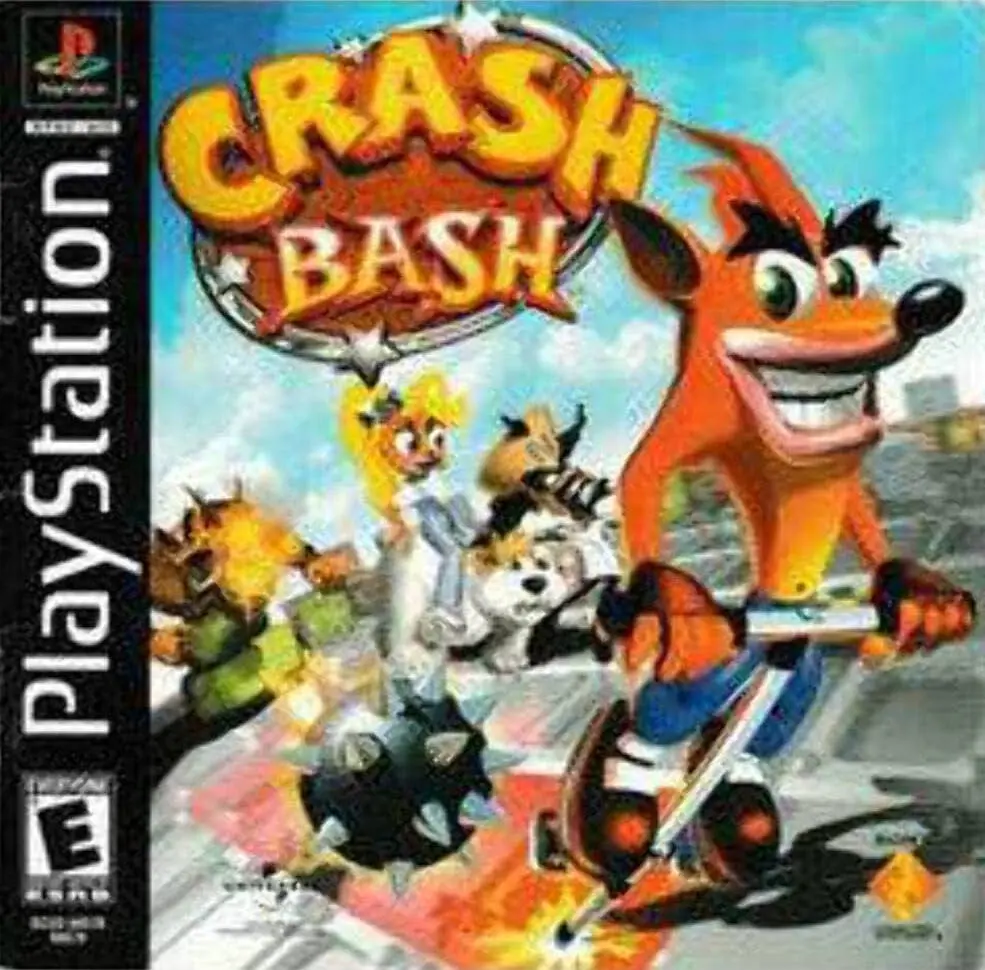

Desenvolvedora: Eurocom
Editora: Sony Computer Entertainment
Lançamento: 2000
Gênero: Party / Mini-games
Modos de Jogo: Single-player, Multiplayer (1-4)
O primeiro jogo da franquia a não ser desenvolvido pela Naughty Dog. Crash Bash levou a série para o gênero "Party Game" (estilo Mario Party), mas sem tabuleiros: o foco aqui é puramente a ação e a pancadaria em arenas fechadas. É conhecido por ser extremamente divertido com amigos e incrivelmente difícil de completar 100% sozinho.
As máscaras irmãs, Aku Aku (o Bem) e Uka Uka (o Mal), discutem sobre quem é o mais forte, mas não podem lutar entre si devido às regras cósmicas. Eles decidem realizar um torneio. Como Uka Uka tem jogadores demais, Aku Aku "toma emprestado" Tiny Tiger e Dingodile para o time dos heróis, equilibrando a disputa entre o Bem e o Mal.
Para os completistas, este é um dos jogos mais difíceis do PS1. Zerar a história é fácil, mas conseguir 200% completando os desafios de Relíquias de Ouro e Platina (vencer 3 rounds seguidos contra campeões da CPU quase perfeitos) é um teste de paciência que separa as crianças dos adultos.